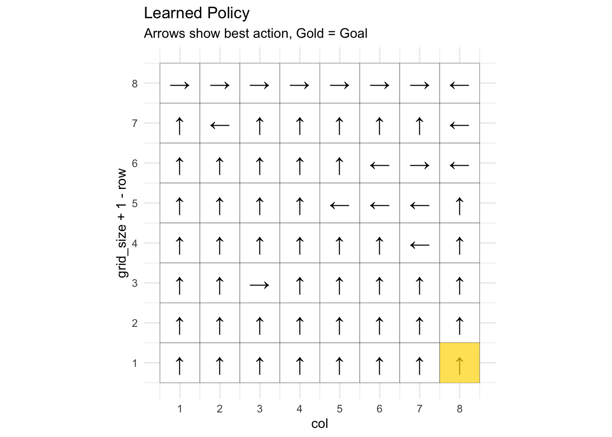

Chapter 14 Intrinsic Rewards
The standard reinforcement learning paradigm assumes agents learn solely from extrinsic rewards provided by the environment. While this approach has achieved remarkable successes in game-playing and robotics, it fundamentally relies on carefully engineered reward functions that capture all aspects of desired behavior. For many real-world applications, designing such reward functions proves either impractical or impossible. Sparse reward environments, where meaningful feedback occurs infrequently, present particular challenges that have motivated the development of intrinsic reward mechanisms.
Intrinsic motivation addresses these limitations by endowing agents with internal reward signals that supplement or replace environmental rewards. These mechanisms draw inspiration from biological systems, where curiosity, novelty-seeking, and information-gathering behaviors emerge without explicit external reinforcement. The mathematical formalization of these concepts has led to practical algorithms that demonstrate superior exploration capabilities and learning efficiency across diverse domains.
14.1 The Sparse Reward Problem and Its Implications
Traditional RL assumes the existence of informative reward signals that guide learning toward desired behaviors. The agents objective is to maximize expected cumulative reward:
\[J(\pi) = \mathbb{E}_{\tau \sim \pi} \left[ \sum_{t=0}^T \gamma^t R_t \right]\]
where \(\tau\) represents trajectories sampled under policy \(\pi\). This formulation works well when rewards are dense and informative, providing frequent feedback about action quality.
However, many environments provide only sparse, delayed, or uninformative rewards. Consider a robot learning to navigate to a goal location in a large maze. The environment provides reward only upon reaching the target, offering no guidance during exploration. Random exploration becomes inefficient as state space size grows, leading to sample complexity that scales exponentially with problem dimension.
The fundamental issue lies in the exploration-exploitation dilemma. Without intermediate rewards, agents have no basis for preferring one action over another until accidentally discovering successful strategies. This creates a bootstrapping problem where learning cannot begin until rare rewarding events occur through random chance.
Intrinsic motivation mechanisms address this challenge by providing internal reward signals that encourage systematic exploration, information gathering, and skill development. These signals augment the learning process by rewarding potentially useful behaviors even in the absence of extrinsic feedback.
14.2 Mathematical Foundations of Intrinsic Motivation
Intrinsic reward mechanisms can be formalized as functions that map agent experiences to internal reward signals. The general framework augments the standard RL objective with intrinsic terms:
\[J_{\text{total}}(\pi) = J_{\text{extrinsic}}(\pi) + \lambda J_{\text{intrinsic}}(\pi)\]
where \(\lambda\) controls the relative importance of intrinsic versus extrinsic motivation. The intrinsic component takes the form:
\[J_{\text{intrinsic}}(\pi) = \mathbb{E}_{\tau \sim \pi} \left[ \sum_{t=0}^T \gamma^t R_t^{\text{int}} \right]\]
The key challenge lies in designing intrinsic reward functions \(R_t^{\text{int}}\) that promote beneficial exploration without overwhelming or conflicting with task objectives.
14.2.1 Curiosity-Driven Learning
One prominent approach bases intrinsic rewards on prediction errors. The intuition is that agents should be curious about aspects of the environment they cannot predict well, as these regions likely contain novel or important information.
The prediction error curiosity model maintains a forward dynamics model \(\hat{f}\) that attempts to predict next states given current states and actions:
\[\hat{s}_{t+1} = \hat{f}(s_t, a_t)\]
The intrinsic reward is proportional to the prediction error:
\[R_t^{\text{int}} = \frac{1}{2} \|\hat{f}(s_t, a_t) - s_{t+1}\|^2\]
This approach encourages agents to explore regions where their world model is inaccurate, gradually improving understanding of environment dynamics.
However, raw prediction error can be misleading in stochastic environments or those with irrelevant but unpredictable elements. A more sophisticated approach uses the Intrinsic Curiosity Module (ICM) framework, which combines forward and inverse dynamics models.
The ICM learns a feature representation \(\phi(s)\) that captures task-relevant aspects of states while filtering out irrelevant details. The inverse dynamics model predicts actions from state transitions:
\[\hat{a}_t = g(\phi(s_t), \phi(s_{t+1}))\]
The forward model predicts feature representations rather than raw states:
\[\hat{\phi}(s_{t+1}) = f(\phi(s_t), a_t)\]
The intrinsic reward combines prediction errors from both models:
\[R_t^{\text{int}} = \frac{\eta}{2} \|\hat{\phi}(s_{t+1}) - \phi(s_{t+1})\|^2\]
where \(\eta\) is a scaling factor. This formulation focuses curiosity on aspects of the environment that are both unpredictable and controllable by the agents actions.
14.2.2 Count-Based Exploration
An alternative approach grounds intrinsic motivation in visitation statistics. States that have been visited infrequently receive higher intrinsic rewards, encouraging systematic exploration of the state space.
The classical approach uses pseudo-counts based on density models. For a generative model \(\rho\) that assigns probabilities to states, the pseudo-count for state \(s\) after \(n\) observations is:
\[N(s) = \frac{\rho(s)}{1 - \rho(s)} \cdot n\]
The intrinsic reward follows the form:
\[R_t^{\text{int}} = \frac{\beta}{\sqrt{N(s_t)}}\]
where \(\beta\) controls the exploration bonus magnitude. This creates larger rewards for rarely visited states and smaller rewards for familiar regions.
For high-dimensional state spaces, exact counting becomes impractical. The Random Network Distillation (RND) approach addresses this by training a neural network to predict the outputs of a fixed random network. The prediction error serves as a novelty measure:
\[R_t^{\text{int}} = \|f_{\theta}(s_t) - \hat{f}_{\phi}(s_t)\|^2\]
where \(f_{\theta}\) is a randomly initialized fixed network and \(\hat{f}_{\phi}\) is a trainable predictor. States that are visited frequently will have smaller prediction errors as the predictor network learns to match the random networks outputs.
14.3 Practical Implementation: Curiosity-Driven Grid World Navigation
Consider a grid world environment where an agent must learn to navigate to a goal location. The environment provides rewards only upon reaching the goal, making exploration crucial for learning.
# Curiosity-Driven Grid World Navigation
library(ggplot2)
library(reshape2)
# Environment setup
set.seed(123)
grid_size <- 8
goal_state <- c(grid_size, grid_size)
n_episodes <- 500
max_steps <- 100
# State encoding and action space
encode_state <- function(row, col) {
(row - 1) * grid_size + col
}
decode_state <- function(state_id) {
row <- floor((state_id - 1) / grid_size) + 1
col <- (state_id - 1) %% grid_size + 1
c(row, col)
}
# Actions: 1=up, 2=right, 3=down, 4=left
get_next_state <- function(state, action) {
pos <- decode_state(state)
row <- pos[1]
col <- pos[2]
if (action == 1) row <- max(1, row - 1) # up
else if (action == 2) col <- min(grid_size, col + 1) # right
else if (action == 3) row <- min(grid_size, row + 1) # down
else if (action == 4) col <- max(1, col - 1) # left
encode_state(row, col)
}
# Extrinsic reward function
get_extrinsic_reward <- function(state) {
pos <- decode_state(state)
if (all(pos == goal_state)) return(10)
return(0)
}
# Intrinsic Curiosity Module implementation
n_states <- grid_size^2
n_actions <- 4
feature_dim <- 4
# Initialize networks (simplified linear models for demonstration)
# Forward model: predicts next state features from current features and action
forward_model <- array(runif(feature_dim * (feature_dim + n_actions), -0.1, 0.1),
dim = c(feature_dim, feature_dim + n_actions))
# Inverse model: predicts action from state transition
inverse_model <- array(runif(n_actions * (2 * feature_dim), -0.1, 0.1),
dim = c(n_actions, 2 * feature_dim))
# Feature encoder: maps states to feature representations
feature_encoder <- array(runif(feature_dim * 2, -0.1, 0.1),
dim = c(feature_dim, 2))
# Helper functions for neural network operations
get_features <- function(state) {
pos <- decode_state(state)
normalized_pos <- (pos - 1) / (grid_size - 1) # normalize to [0,1]
features <- feature_encoder %*% normalized_pos
tanh(features) # activation function
}
action_to_onehot <- function(action) {
onehot <- rep(0, n_actions)
onehot[action] <- 1
onehot
}
# Compute intrinsic reward using ICM
get_intrinsic_reward <- function(state, action, next_state, alpha = 0.01) {
features_t <- get_features(state)
features_t1 <- get_features(next_state)
action_onehot <- action_to_onehot(action)
# Forward model prediction
forward_input <- c(features_t, action_onehot)
predicted_features <- as.vector(forward_model %*% forward_input)
# Prediction error as intrinsic reward
prediction_error <- sum((predicted_features - features_t1)^2)
intrinsic_reward <- alpha * prediction_error
# Update forward model (simple gradient descent)
# Gradient of loss w.r.t. weights: error * input
error_gradient <- 2 * (predicted_features - features_t1)
# Update each row of the forward model
for (i in 1:feature_dim) {
forward_model[i, ] <<- forward_model[i, ] - 0.001 * error_gradient[i] * forward_input
}
intrinsic_reward
}
# Q-learning with intrinsic motivation
Q <- array(0, dim = c(n_states, n_actions))
visit_counts <- array(0, dim = c(n_states))
learning_rate <- 0.1
gamma <- 0.99
epsilon <- 0.3
intrinsic_weight <- 0.5
# Training metrics
episode_rewards <- numeric(n_episodes)
episode_lengths <- numeric(n_episodes)
intrinsic_rewards_history <- list()
cat("Training curiosity-driven agent...\n")## Training curiosity-driven agent...for (episode in 1:n_episodes) {
state <- encode_state(1, 1) # start at top-left
episode_reward <- 0
episode_intrinsic <- numeric()
for (step in 1:max_steps) {
visit_counts[state] <- visit_counts[state] + 1
# Epsilon-greedy action selection
if (runif(1) < epsilon) {
action <- sample(1:n_actions, 1)
} else {
action <- which.max(Q[state, ])
}
# Take action
next_state <- get_next_state(state, action)
# Compute rewards
extrinsic_reward <- get_extrinsic_reward(next_state)
intrinsic_reward <- get_intrinsic_reward(state, action, next_state)
total_reward <- extrinsic_reward + intrinsic_weight * intrinsic_reward
episode_intrinsic <- c(episode_intrinsic, intrinsic_reward)
episode_reward <- episode_reward + extrinsic_reward
# Q-learning update
td_target <- total_reward + gamma * max(Q[next_state, ])
td_error <- td_target - Q[state, action]
Q[state, action] <- Q[state, action] + learning_rate * td_error
# Check for goal
if (extrinsic_reward > 0) {
episode_lengths[episode] <- step
break
}
state <- next_state
}
if (episode_reward == 0) {
episode_lengths[episode] <- max_steps
}
episode_rewards[episode] <- episode_reward
intrinsic_rewards_history[[episode]] <- episode_intrinsic
# Decay exploration
if (episode %% 50 == 0) {
epsilon <- max(0.05, epsilon * 0.95)
avg_length <- mean(episode_lengths[max(1, episode-49):episode])
success_rate <- mean(episode_rewards[max(1, episode-49):episode] > 0)
cat(sprintf("Episode %d: Success rate %.2f, Avg length %.1f\n",
episode, success_rate, avg_length))
}
}## Episode 50: Success rate 0.00, Avg length 100.0
## Episode 100: Success rate 0.00, Avg length 100.0
## Episode 150: Success rate 0.00, Avg length 100.0
## Episode 200: Success rate 0.00, Avg length 100.0
## Episode 250: Success rate 0.00, Avg length 100.0
## Episode 300: Success rate 0.00, Avg length 100.0
## Episode 350: Success rate 0.00, Avg length 100.0
## Episode 400: Success rate 0.00, Avg length 100.0
## Episode 450: Success rate 0.00, Avg length 100.0
## Episode 500: Success rate 0.00, Avg length 100.0# Analyze learning progress
success_episodes <- which(episode_rewards > 0)
if (length(success_episodes) > 0) {
first_success <- min(success_episodes)
cat(sprintf("First successful episode: %d\n", first_success))
cat(sprintf("Final success rate (last 100 episodes): %.2f\n",
mean(episode_rewards[(n_episodes-99):n_episodes] > 0)))
} else {
first_success <- n_episodes
cat("No successful episodes found\n")
}## No successful episodes found# Visualize learned policy
learned_policy <- array(0, dim = c(grid_size, grid_size))
for (row in 1:grid_size) {
for (col in 1:grid_size) {
state <- encode_state(row, col)
learned_policy[row, col] <- which.max(Q[state, ])
}
}
# Create visualization data frame
policy_df <- expand.grid(row = 1:grid_size, col = 1:grid_size)
policy_df$action <- as.vector(learned_policy)
policy_df$action_char <- c("", "", "", "")[policy_df$action]
# Create heatmap of visit counts
visit_matrix <- matrix(visit_counts, nrow = grid_size, ncol = grid_size, byrow = TRUE)
visit_df <- expand.grid(row = 1:grid_size, col = 1:grid_size)
visit_df$visits <- as.vector(visit_matrix)
# Plot learning curves
learning_data <- data.frame(
episode = 1:n_episodes,
success = as.numeric(episode_rewards > 0),
length = episode_lengths
)
# Moving average for smoothing (handle edge cases)
window_size <- 50
if (n_episodes >= window_size) {
success_smooth <- rep(NA, n_episodes)
for (i in window_size:n_episodes) {
success_smooth[i] <- mean(learning_data$success[(i-window_size+1):i])
}
learning_data$success_ma <- success_smooth
} else {
learning_data$success_ma <- cumsum(learning_data$success) / seq_along(learning_data$success)
}
# Create learning curve plot
p1 <- ggplot(learning_data, aes(x = episode)) +
geom_line(aes(y = success_ma), color = "blue", size = 1) +
geom_smooth(aes(y = success), method = "loess", span = 0.3, se = FALSE, color = "red") +
labs(title = "Learning Progress",
x = "Episode",
y = "Success Rate",
subtitle = "Blue: Moving average, Red: Smoothed trend") +
theme_minimal()## Warning: Using `size` aesthetic for lines was deprecated in ggplot2 3.4.0.
## Please use `linewidth` instead.
## This warning is displayed once every 8 hours.
## Call `lifecycle::last_lifecycle_warnings()` to see where this warning was generated.# Create policy visualization
p2 <- ggplot(policy_df, aes(x = col, y = grid_size + 1 - row)) +
geom_tile(color = "black", fill = "white") +
geom_text(aes(label = action_char), size = 6) +
geom_tile(data = data.frame(col = grid_size, row = 1),
aes(x = col, y = row), fill = "gold", alpha = 0.7) +
labs(title = "Learned Policy",
subtitle = "Arrows show best action, Gold = Goal") +
scale_x_continuous(breaks = 1:grid_size) +
scale_y_continuous(breaks = 1:grid_size) +
theme_minimal() +
theme(aspect.ratio = 1)
# Create visit count heatmap
p3 <- ggplot(visit_df, aes(x = col, y = grid_size + 1 - row, fill = visits)) +
geom_tile() +
scale_fill_gradient(low = "white", high = "darkblue") +
labs(title = "State Visitation Frequency",
fill = "Visit Count") +
scale_x_continuous(breaks = 1:grid_size) +
scale_y_continuous(breaks = 1:grid_size) +
theme_minimal() +
theme(aspect.ratio = 1)
print(p1)## `geom_smooth()` using formula = 'y ~ x'## Warning: Removed 49 rows containing missing values or values outside the scale range (`geom_line()`).

## Learned policy (arrows show best action):for (row in 1:grid_size) {
cat(sprintf("Row %d: %s\n", row,
paste(c("", "", "", "")[learned_policy[row, ]], collapse = " ")))
}## Row 1:
## Row 2:
## Row 3:
## Row 4:
## Row 5:
## Row 6:
## Row 7:
## Row 8: ##
## Comparing with random baseline...Q_random <- array(0, dim = c(n_states, n_actions))
random_success <- numeric(n_episodes)
for (episode in 1:n_episodes) {
state <- encode_state(1, 1)
for (step in 1:max_steps) {
if (runif(1) < 0.3) {
action <- sample(1:n_actions, 1)
} else {
action <- which.max(Q_random[state, ])
}
next_state <- get_next_state(state, action)
extrinsic_reward <- get_extrinsic_reward(next_state)
# Standard Q-learning (no intrinsic reward)
td_target <- extrinsic_reward + gamma * max(Q_random[next_state, ])
td_error <- td_target - Q_random[state, action]
Q_random[state, action] <- Q_random[state, action] + learning_rate * td_error
if (extrinsic_reward > 0) {
random_success[episode] <- 1
break
}
state <- next_state
}
}
random_first_success <- which(random_success > 0)[1]
if (is.na(random_first_success)) random_first_success <- n_episodes
cat(sprintf("Curiosity agent first success: episode %d\n", first_success))## Curiosity agent first success: episode 500## Random agent first success: episode 500if (first_success < n_episodes && random_first_success < n_episodes) {
cat(sprintf("Improvement: %.1fx faster learning\n",
random_first_success / first_success))
} else if (first_success < random_first_success) {
cat("Curiosity agent learned faster\n")
} else {
cat("Both agents had similar performance\n")
}## Both agents had similar performance# Final performance comparison
curiosity_final_success <- mean(episode_rewards[(n_episodes-99):n_episodes] > 0)
random_final_success <- mean(random_success[(n_episodes-99):n_episodes])
cat(sprintf("Final 100 episodes success rate:\n"))## Final 100 episodes success rate:## Curiosity agent: 0.00## Random agent: 0.0014.4 Advanced Intrinsic Motivation Mechanisms
Beyond basic curiosity and count-based approaches, several sophisticated mechanisms have emerged to address specific challenges in intrinsic motivation.
The Go-Explore algorithm addresses the problem of detachment, where agents may discover promising regions but fail to return to them reliably. The method maintains an archive of interesting states and uses goal-conditioned policies to return to promising regions for further exploration.
Empowerment provides another perspective on intrinsic motivation, formalizing the intuition that agents should seek states where they have maximal influence over future outcomes. Mathematically, empowerment is defined as the mutual information between actions and future states:
\[\text{Empowerment}(s) = I(A_{t:t+n}; S_{t+n+1} | S_t = s)\]
This quantity measures how much an agents action choices affect future state distributions, providing intrinsic motivation toward states with high controllability.
Information Gain approaches reward agents for reducing uncertainty about environment parameters or dynamics. If the agent maintains a belief distribution \(p(\theta)\) over environment parameters, the intrinsic reward for a transition \((s, a, s')\) becomes:
\[R_t^{\text{int}} = H[p(\theta | h_t)] - H[p(\theta | h_t, s_t, a_t, s_{t+1})]\]
where \(H[\cdot]\) denotes entropy and \(h_t\) represents the agents history up to time \(t\).
14.5 Implementation Considerations and Practical Guidelines
Successful deployment of intrinsic motivation requires careful attention to several design choices. The balance between intrinsic and extrinsic motivation proves crucial, as excessive intrinsic rewards can prevent agents from focusing on task objectives. The weighting parameter \(\lambda\) typically requires tuning for each domain, with common values ranging from 0.1 to 1.0.
The choice of intrinsic mechanism depends on problem characteristics. Curiosity-driven approaches work well in deterministic environments with learnable dynamics, while count-based methods suit stochastic environments where prediction-based curiosity might be misled by irreducant randomness. Information gain approaches excel when the environment has hidden parameters that can be discovered through exploration.
Computational overhead represents another important consideration. Some intrinsic motivation mechanisms require training additional neural networks or maintaining complex data structures, potentially doubling computational requirements. Efficient implementations often approximate theoretical ideals to maintain practical feasibility.
14.6 Theoretical Analysis and Convergence Properties
The theoretical foundations of intrinsic motivation remain an active area of research. Unlike standard RL, where convergence guarantees are well-established, intrinsic motivation introduces additional complexity through time-varying reward functions that depend on the agents learning progress.
For count-based approaches, theoretical analysis shows that under certain regularity conditions, the induced exploration behavior leads to polynomial sample complexity for discovering rewarding states. The key insight is that intrinsic rewards create a curriculum that guides agents toward systematic exploration rather than random wandering.
Curiosity-driven approaches present greater theoretical challenges due to their adaptive nature. The forward models learning progress affects the intrinsic reward signal, creating a non-stationary optimization landscape. Recent work has established convergence guarantees under assumptions of bounded prediction error and sufficient exploration, but practical algorithms often deviate from theoretical requirements.
14.7 Applications and Empirical Results
Intrinsic motivation has demonstrated significant improvements across diverse domains. In robotics, curiosity-driven learning enables robots to acquire motion skills without hand-crafted rewards, learning to manipulate objects through self-supervised exploration. The key advantage lies in avoiding the reward engineering bottleneck while still acquiring useful behaviors.
Game-playing environments have provided compelling demonstrations of intrinsic motivations effectiveness. In exploration-heavy games like Montezumas Revenge, curiosity-driven agents achieve superhuman performance while baseline methods fail to make meaningful progress. The sparse reward structure of these games closely mirrors real-world challenges where feedback is delayed or infrequent.
Scientific discovery represents an emerging application area where intrinsic motivation shows particular promise. Agents can learn to conduct experiments and form hypotheses about unknown systems purely through curiosity, potentially accelerating research in domains where human intuition provides limited guidance.
14.8 Limitations and Future Directions
Despite significant advances, intrinsic motivation faces several fundamental limitations. The reward hacking problem occurs when agents discover ways to maximize intrinsic rewards without learning useful behaviors, such as finding screen regions with unpredictable visual noise in video games.
The noisy TV problem illustrates how stochastic elements can mislead curiosity-based agents. If the environment contains sources of unpredictable but irrelevant variation, agents may focus excessive attention on these regions rather than exploring meaningful state space regions.
Scale and transfer represent ongoing challenges. Most intrinsic motivation work has focused on relatively simple environments, and scaling to complex real-world domains remains difficult. Additionally, skills acquired through intrinsic motivation dont always transfer effectively to new tasks or domains.
Future research directions include developing more robust intrinsic reward functions that resist exploitation, creating hierarchical approaches that operate across multiple temporal scales, and establishing better theoretical foundations for understanding when and why intrinsic motivation succeeds or fails.
The integration of intrinsic motivation with other RL advances, such as meta-learning and multi-task learning, offers promising avenues for creating more capable and autonomous agents. As environments become more complex and reward engineering becomes more challenging, intrinsic motivation mechanisms will likely play increasingly important roles in developing intelligent systems that can learn and adapt independently.